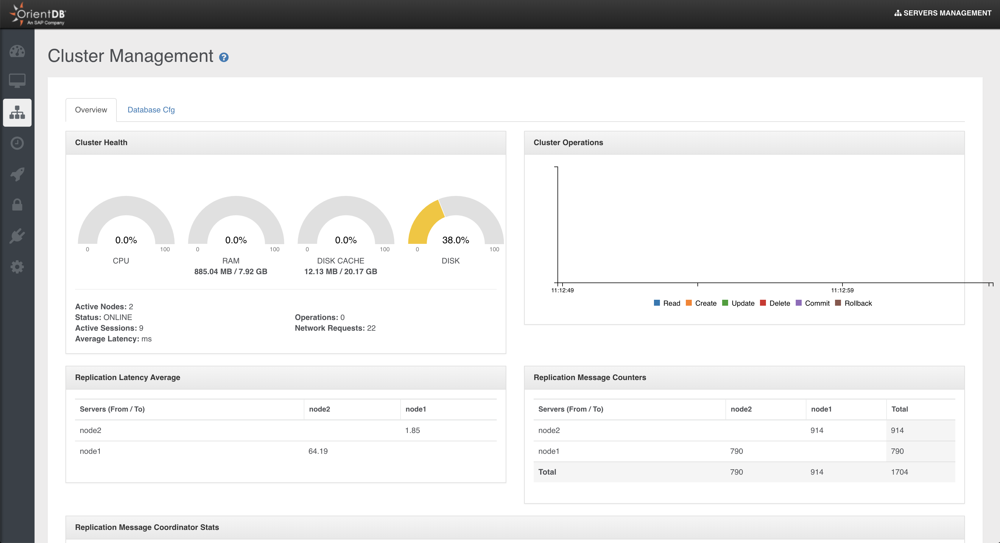

Only users with grant
server.metricsandserver.distributedcan see this section
Cluster Management
This is the section (available only for the Enterprise Edition) to work with OrientDB Cluster as DBA/DevOps.
NOTE: This feature is available only in the OrientDB Enterprise Edition. If you are interested in a commercial license look at OrientDB Subscription Packages.
On the top of the page are reported the number of active nodes joining your cluster.
Overview
This page summarizes all the most important information about all servers connected to the cluster:
CPU,RAM,DISK CACHEandDISKusedStatusOperations per secondActive ConnectionsNetwork RequestsLive chartwith CRUD operations in real-time
It also contains stats about replication messages:
Replication Latency Average: average replication latency between nodesReplication Message Counters: counters of messages exchanged between nodes;Replication Message Coordinator Stats: detailed counters of messagges grouped by type, sent by the coordinator.

Databases
In this panel you can see all databases present on each server joining your cluster.
Through the box above you can change in real time the current cluster configuration, without touching the config/default-distributed-db-config.json file content. You can set the following parameters:
Write QuorumRead QuorumAuto DeployHot AlignmentRead your WritesFailure Available Nodes Less QuorumServer Roles, roles may be "Master" or "Replica"
To learn more about these configuration parameters please visit the Distributed Configuration section.